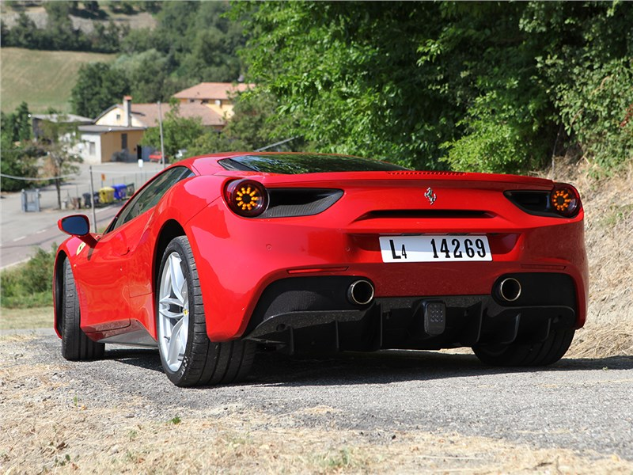

Двигатель: 6,5-литровый V12 (тип F140 GA) Мощность: 789 лошадиных сил (588 кВт) Крутящий момент: 718 Нм при 7000 об/мин. Трансмиссия: 7-ступенчатая автоматическая с двойным сцеплением (тип F1-DCT). Привод: Задний привод. 0–100 км/ч. Ускорение: около 2,9 секунды. Максимальная скорость: более 340 км/ч. Габариты: Длина – 4 657 мм, Ширина – 1 971 мм, Высота – 1 276 мм. Вес: около 1630 кг. Распределение веса: 47% спереди, 53% сзади. Расход топлива: около 15 л/100 км (смешанный цикл)
Ferrari 812 Superfast — высокопроизводительный спортивный автомобиль, представленный итальянским производителем Ferrari. Он был представлен в 2017 году и стал преемником F12 Berlinetta. 812 Superfast — одна из самых мощных и быстрых моделей, когда-либо выпускавшихся Ferrari для дорог. 812 Superfast также обладает превосходной динамикой и управляемостью благодаря передовым технологиям, таким как электронная система управления подвеской и активное управление задними колесами. Он имеет элегантный и агрессивный дизайн, типичный для автомобилей Ferrari, со стильными линиями и аэродинамическими элементами. Внутри салона 812 Superfast предлагается комфортное и роскошное пространство с использованием высококачественных материалов и передовых технологий. Это включает в себя современную информационно-развлекательную систему, спортивные сиденья и передовые системы безопасности. Ferrari 812 Superfast — это автомобиль, сочетающий в себе мощность, элегантность и высокие характеристики. Он представляет собой воплощение итальянской инженерной мастерской и страсти к гоночному наследию Ferrari.
Двигатель: 3,9-литровый V8 Мощность: 660 лошадиных сил (492 кВт) Крутящий момент: 760 Нм при 3000 об/мин. Трансмиссия: 7-ступенчатая автоматическая с двойным сцеплением (тип F1-DCT). Привод: Задний привод. 0–100 км/ч. Ускорение: около 3,0 секунды. Максимальная скорость: более 330 км/ч. Габариты: Длина – 4 568 мм, Ширина – 1 952 мм, Высота – 1 213 мм. Вес: около 1475 кг. Распределение веса: 42% спереди, 58% сзади. Расход топлива: около 11,4 л/100 км (смешанный цикл)
Ferrari 488 GTB — высокопроизводительный спортивный автомобиль, представленный итальянским производителем Ferrari. Он был представлен в 2015 году и является преемником модели 458 Italia. Ferrari 488 GTB оснащен мощным двигателем V8 и обеспечивает впечатляющую динамику и скорость. Он также предлагает отличную управляемость и динамику благодаря передовым технологиям, таким как электронная система управления подвеской и активное рулевое управление задними колесами. Дизайн 488 GTB сочетает в себе элегантность и агрессию, типичную для автомобилей Ferrari, с обтекаемыми линиями и аэродинамическими элементами. Внутри салона 488 GTB создано комфортное и роскошное пространство с использованием высококачественных материалов и передовых технологий. Это включает в себя современную информационно-развлекательную систему, спортивные сиденья и передовые системы безопасности. Ferrari 488 GTB сочетает в себе мощность, элегантность и высокие характеристики, представляя собой воплощение итальянского мастерства и страсти к гоночному наследию Ferrari.
Двигатель: 4,0-литровый V8 с двойным турбонаддувом + 3 электродвигателя. Общая мощность: 986 лошадиных сил (735 кВт) Трансмиссия: 8-ступенчатая автоматическая с двойным сцеплением. Привод: Полный привод 0-100 км/ч. Ускорение: менее 2,5 секунды. Максимальная скорость: более 340 км/ч. Запас хода только на электричестве: до 25 км Габариты: Длина – 4710 мм, Ширина – 1973 мм, Высота – 1186 мм. Вес: около 1570 кг. Распределение веса: 45 % спереди, 55 % сзади. Расход топлива: Смешанный цикл – около 3,0 л/100 км.
Ferrari SF90 Stradale — необычный высокопроизводительный гибридный спортивный автомобиль, представленный известным итальянским производителем Ferrari. Он представляет собой технологическое чудо и служит свидетельством стремления Ferrari расширить границы автомобильной инженерии. В основе SF90 Stradale лежит мощный 4,0-литровый двигатель V8 с двойным турбонаддувом и три электромотора, обеспечивающие ошеломляющую общую мощность в 986 лошадиных сил. Эта гибридная силовая установка обеспечивает выдающуюся производительность: разгон от 0 до 100 км/ч занимает менее 2,5 секунды, а максимальная скорость превышает 340 км/ч. Кроме того, SF90 Stradale предлагает запас хода только на электричестве до 25 км, что позволяет в определенных ситуациях ездить с нулевым уровнем выбросов. SF90 Stradale может похвастаться усовершенствованной системой полного привода, обеспечивающей исключительную тягу и управляемость в различных условиях вождения. Его аэродинамический дизайн сочетает в себе поразительную эстетику с функциональными элементами, оптимизируя воздушный поток и повышая стабильность на высоких скоростях. Внутри салона SF90 Stradale создана роскошная и технологичная обстановка. Высококачественные материалы, изысканное мастерство и передовые функции создают кабину, ориентированную на водителя. Информационно-развлекательная система обеспечивает бесперебойную связь и развлечения, а эргономичные сиденья обеспечивают комфорт и поддержку во время энергичных поездок. SF90 Stradale представляет собой настоящее сочетание мощности, элегантности и экологичности. Он воплощает неустанное стремление Ferrari к производительности, используя гибридную технологию для повышения эффективности. Благодаря впечатляющим характеристикам, футуристическому дизайну и самым современным функциям SF90 Stradale является культовым символом итальянского автомобильного совершенства и непревзойденного гоночного наследия Ferrari.